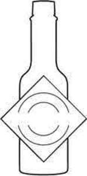

Trade Mark Journal No.2025/043 24 October 2025
UK00004195834 28 April 2025 (16,18,21,24,25,29,30,32,35,43)

- Class 16
- Stickers; printed note cards; blank note cards; printed greeting cards; printed recipe cards; paper and cardboard; printed matter; books; cookbooks; catalogues; posters; photographs; stationery and office requisites, except furniture; adhesives for stationery or household purposes; drawing materials and materials for artists; paintbrushes; plastic sheets, films and bags for wrapping and packaging; coasters, placemats, drinking cups, plates, table linen and table napkins, all made of paper; newsletters; brochures; printed periodicals; magazines.
- Class 18
- Leather, un-worked or semi worked; leather and imitations of leather; animal skins; hides; trunks and travelling leather bags; bags; umbrellas; walking sticks; whips; harness and saddlery; luggage; handbags; duffel bags; tote bags; weekender bags; backpacks; purses; cosmetic cases (sold empty); shaving kits bags (sold empty); billfolds; coin cases; wallets; key cases; school bags; sports bags; music cases; game bags; card cases (notecases); hat boxes of leather; sling bags for carrying infants; tool bags of leather (empty); wheeled shopping bags; attaché cases; bags for climbers; bags for campers; beach bags; briefcases; valises; vanity cases; haversacks; garment bags for travel; key cases (leather ware); net bags for shopping; suitcases; pouches; clothing for pets; canes; boxes of leather or leather board; credit card cases [wallets]; casual bags; collars for animals.
- Class 21
- Household or kitchen utensils and containers; cookware and tableware, except forks, knives and spoons; combs and sponges; brushes, except paintbrushes; articles for cleaning purposes; glassware, porcelain ware and earthenware; cups, drinking glasses, mugs, flasks, bowls, dishes, plates, bottles, kettles and jars made of glass, ceramic, stoneware, porcelain and crystal; ceramics for household purposes; cocktail stirrers; cocktail shakers; cookie jars; corkscrews; crockery; cruets; decanters; pots, pans, casseroles, grills for cooking and woks; ice buckets; ice cube trays; pails; napkin holders and napkin rings; salt and pepper shakers; pepper mills; coasters and placemats made of glass, ceramic and cork; trays for domestic purposes made of wood, glass or ceramic; trivets; insulated beverage holders; spoon rests; pottery; spice sets; baking mats; trivets and coasters to protect the table from water and or heat damage from hot dishes; drinking vessels; isothermal bags; tea cozies; picnic baskets; thermally insulated containers for food; non-electric coffee percolators, coffee pots and tea pots; shoe horns; squeezers for citrus and other fruits; watering cans; cutting boards for the kitchen; egg cups; figurines of porcelain, terra-cotta or glass; flower pots; glass jars and vials; cosmetic utensils, make-up brushes and cases, vanity cases.
- Class 24
- Bed sheets; bed blankets; quilts; throws; comforters; coverlets; duvets; pillow cases; pillow shams; pillow covers; cushion covers; bedspreads; bed skirts; dust ruffles; bed pads; mattress covers; sleeping bags; towels; washcloths; dish cloths; table linen; textile handkerchiefs; textile table napkins; textile place mats; shower curtains; shower curtain liners; furnishing and upholstery fabrics; coasters of textile; fabric window coverings and treatments, namely, curtains, draperies, sheers, swags and valances; wall hangings made of textiles; pet blankets; flags of textile or plastic; blanket throws; blankets; woolen fabric; textiles made of wool; textile fabrics for making into blankets; wool loop knit fabrics; throws; bed throws; wool yarn fabrics; throws (furniture coverings); fabrics made from wool, other than for insulation; textile piece goods for making cushion covers; fabrics for making curtains; curtains of textiles or plastic; bedsheets; coverings for furniture; woven fabrics for cushions; curtains made of textile fabrics; curtains; soft furnishings; materials for soft furnishings; textiles for furnishings; textiles in the form of window furnishings; woven furnishing fabrics; window furnishing fabrics; interior decoration fabrics; drapes in the nature of curtains made of textile materials; textile goods for use as bedding; textiles for interior decorating; fabrics for interior decorating; small curtains made of textile materials.
- Class 25
- Clothing; footwear; headgear; t-shirts; sweatshirts; shirts; hats; caps; sweaters; men's, women's and children's clothing and outer clothing; undershorts and undershirts; aprons and smocks; bathrobes and house robes; belts; suspenders; socks and stockings; swimwear; jackets, coats and blazers; pants, slacks, shorts, skirts and dresses; underwear; lounge wear; pajamas; ties and scarves; gloves; shoes, sandals and boots.
- Class 29
- Meat, fish, poultry and game; processed meat; seasoned and prepared meat products; meat extracts; preserved, dried, frozen, pickled, and cooked fruits, vegetables and legumes; preserved, canned, and pickled olives; jellies, jams, compotes; pepper jelly; eggs, milk and milk products, including butter, cheese, cream, yogurt, powdered milk for alimentary purposes; nuts, seeds; peanut butter; nut butter; seed butter; oils for food; edible oils; olive oils; edible fats; preserved fish with pepper sauce; apricots; milk-based snacks and cheese-based snacks; seasoned sunflower seeds, corn nuts, peanuts, and nut and snack mixes; mixtures of fruit and nuts; seasoned foods products; pickles; pickled and seasoned vegetables; beans; seasoned nuts; snack foods; dips; prepared beef; beef jerky; vegetable spreads; vegetable based snack foods and chips; legume-based snacks and spreads; potato chips; potato crisps; prepared meals and snack foods made from meat, fish, poultry, game, fruit, vegetables, pulses, nuts or seeds.
- Class 30
- Coffee, tea, cocoa and artificial coffee; beverages with a coffee, tea or chocolate base; rice; tapioca; flour and preparations made from cereals, wheat, rice, corn flour, bread and confectionery; bread; pastries; edible ices; ice; ice cream; sugar, honey; treacle; yeast; baking-powder; salt; seasoned salt; cereals, pasta, and noodles; snack foods; baked goods, cookies, crackers, cheese flavored crackers, rice crackers; popcorn; pizza; tacos; burritos; sandwiches; candy; lollipops; chewing gum; jelly beans; cinnamon and pepper spiced candies; chocolate; chocolate based sauce, powder; agave syrup; custard; pudding; sorbet; frozen yoghurt; candy mints and other confectionery; instant confectionery mixes; curry spices; condiments; mustard, ketchup, mayonnaise, salsas, dipping sauces, marinades, relish, chutney, vinegars and salad dressings; soy sauces; garlic sauces; steak sauces; sweet and spicy sauces; fruit sauces; chili and chili seasonings, sauces and powders; flavorings for foods and beverages; hot sauces, pepper sauces, spices, and seasonings; wet and dry pepper seasonings, namely crushed red pepper, dry red pepper flavoring, pepper paste and ground wet pepper seed.
- Class 32
- Mineral and aerated waters and other non-alcoholic drinks; fruit drinks and fruit juices; syrups and other preparations for making beverages; non-alcoholic beverages containing pepper sauce; preparations containing pepper sauce for use in preparing cocktails and other preparations for cocktails; non-alcoholic cocktail mixes; tomato juice beverages; tomato juice; non-alcoholic cocktails; preparations and extracts for making non-alcoholic beverages; preparations and extracts for making non-alcoholic cocktails; pre-mixed non-alcoholic beverages.
- Class 35
- Marketing services in connection with food, food products and beverages; retail store services in connection with a wide variety of consumer goods, namely, grocery and food products, paper and cardboard, printed matter, bookbinding material, photographs, stationery and office requisites, adhesives for stationery or household purposes, drawing materials and materials for artists, paintbrushes, instructional and teaching materials, plastic sheets, films and bags for wrapping and packaging, printers' type, printing blocks, leather and imitations of leather, animal skins and hides, luggage and carrying bags, umbrellas and parasols, walking sticks, whips, harness and saddlery, collars, leashes and clothing for animals, household or kitchen utensils and containers, cookware and tableware, knives and spoons, combs and sponges, brushes, brush-making materials, articles for cleaning purposes, unworked or semi-worked glass, glassware, porcelain and earthenware, textiles and substitutes for textiles, household linen, curtains, clothing, footwear, headwear, meat, fish, poultry and game, meat extracts, preserved, frozen, dried and cooked fruits and vegetables, jellies, jams, compotes, eggs, milk, cheese, butter, yogurt and other milk products, oils and fats for food, coffee, tea, cocoa, rice, pasta and noodles, tapioca and sago, flour and preparations made from cereals, bread, pastries and confectionery, chocolate, ice cream, sorbets and other edible ices, sugar, honey, treacle, yeast, baking-powder, salt, seasonings, spices, preserved herbs, vinegar, sauces and other condiments, ice, beers, non-alcoholic beverages, mineral and aerated waters, fruit beverages and fruit juices, syrups and other preparations for making non-alcoholic beverages; retail store services in connection with food products, sauces, spices, drink mixes and condiments; presentation of goods on communication media, for retail purposes.
- Class 43
- Services for providing food and drink; restaurant and bar services; food services; catering and hotel services; providing information about restaurant services; providing information in the field of recipes and cooking; providing information in the nature of recipes for drinks; providing information, news and commentary in the field of dining, cooking and restaurants.
McIlhenny Company
Representative: Cleveland Scott York